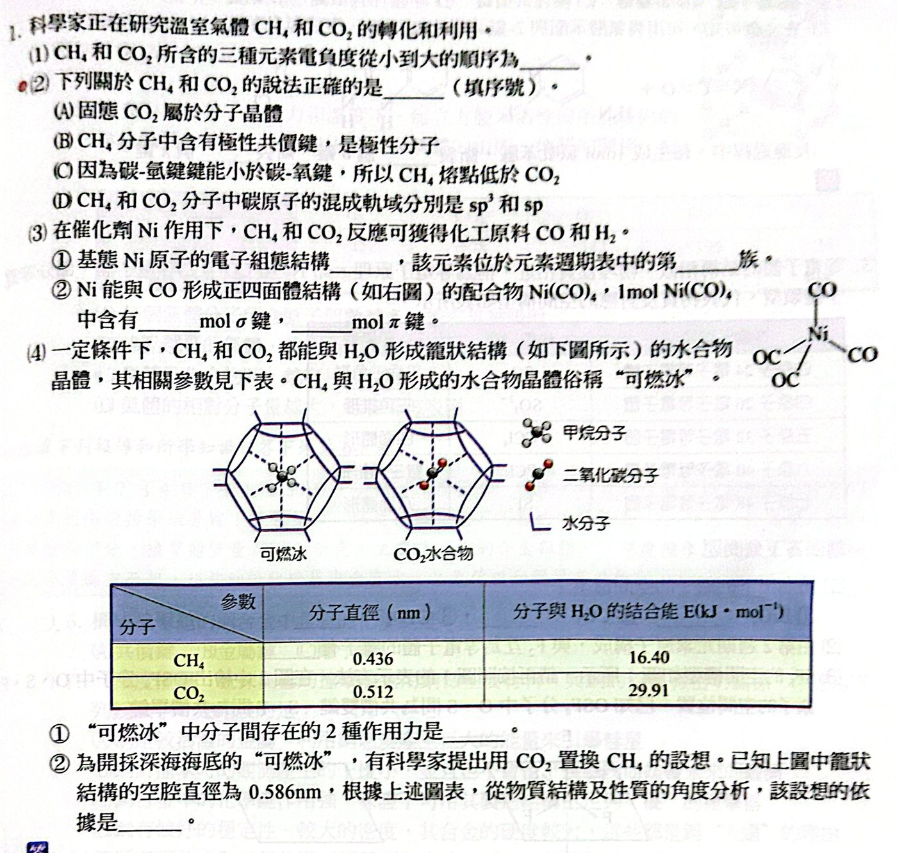

看答案與詳解收起
答(1) H＜C＜O (2) (A)(D) (3) ① [Ar]3d84s2，第 10 族（8B）② 8、8 (4) ① 氫鍵、凡得瓦力 ② 見詳解
解
(1) 電負度：H（2.1）＜ C（2.5）＜ O（3.5）
(2)
- (A) ○ 乾冰是分子晶體
- (B) ✗ C−H 是極性鍵，但 CH4 為正四面體，是非極性分子
- (C) ✗ 熔點由分子間作用力決定，和分子內鍵能無關（CH4 分子量小、分散力小）
- (D) ○ CH4：sp3；CO2：sp
(3) ① Ni（28）：1s22s22p63s23p63d84s2，位於第 10 族（8B 族）
② Ni(CO)4：4 個 Ni−C σ 鍵 ＋ 4 個 C≡O（各 1σ 2π）
σ ＝ 4 ＋ 4 ＝ 8 mol；π ＝ 4 × 2 ＝ 8 mol
(4) ① 水分子之間以氫鍵搭成籠子；CH4 與水分子之間是凡得瓦力（偶極−誘發偶極力、分散力）
② CO2 分子直徑 0.512 nm ＜ 籠的空腔 0.586 nm，可以進入籠中；而且 CO2 與 H2O 的結合能（29.91）大於 CH4（16.40），形成的水合物較穩定 ⇒ CO2 能把 CH4 置換出來。